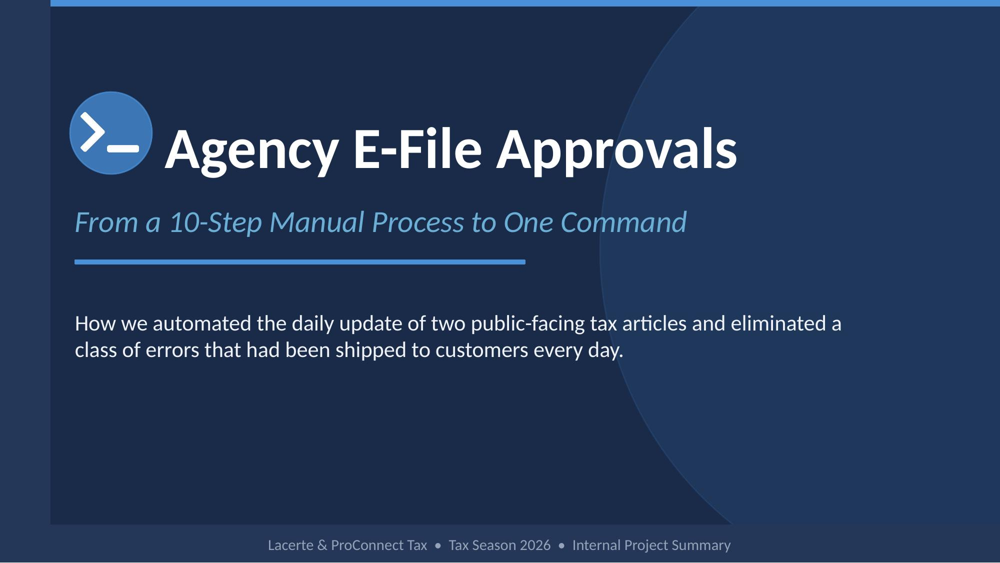
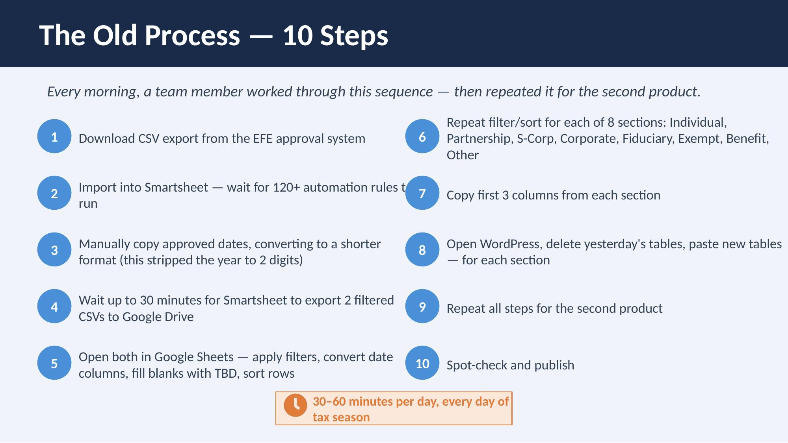
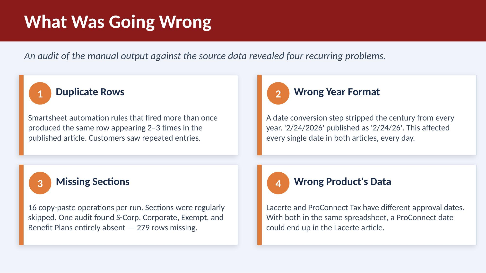
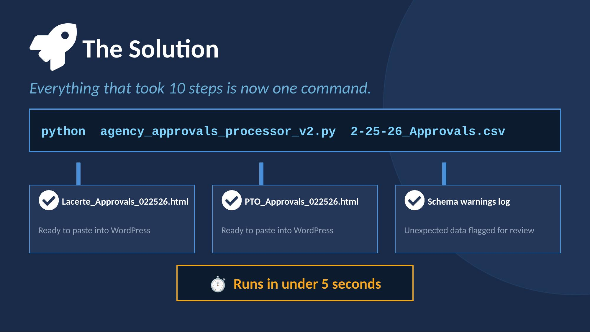
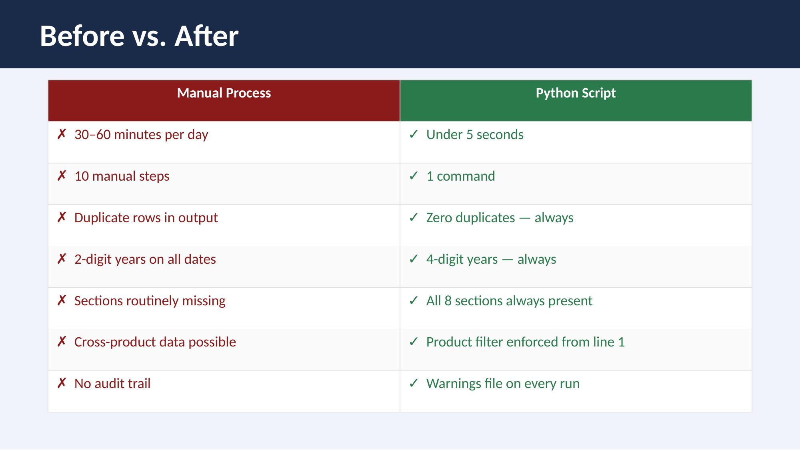

Tax Season Content Automation
Replacing a daily 30 to 60 minute manual workflow with one Python command
Overview

Every business day during tax season, our team updated the Agency Approvals help articles for our professional tax products. These articles tell accountants which tax forms the tax agencies have approved for e-filing. The process was all manual: export CSVs from an internal source, update rows in a Smartsheet, format the content by hand, paste it into WordPress, and publish. It took 30 to 60 minutes a day, and it kept producing the same mistakes: duplicate rows, formatting that didn't match, and missed updates.

The Problem
The workflow was 10 manual steps across 4 tools: the internal data source, Excel, Smartsheet, and WordPress. Every handoff was a chance for an error, and nothing checked the output before it went live.
Accountants use these articles to decide whether they can file a form. An error here can turn into a filing mistake.


The Solution
I wrote a Python script that does the whole thing in one command. It pulls the source data, removes duplicate rows, builds the article HTML in the right format, updates status in Smartsheet through its API, and gets everything ready for WordPress. It runs in about 5 seconds.

Publishing to WordPress
The script's output already matches our WordPress templates. Whoever runs it pastes the HTML into the Gutenberg editor in place of the previous day's tables. Before, that meant going through 8 sections, deleting the old content, and pasting new content into each one. Now it's one paste per product.
Impact
- The daily update went from 30 to 60 minutes to about 5 seconds
- The repeat errors (duplicate rows, formatting mismatches) stopped
- The team got that time back during the busiest part of the year
- I documented the process so anyone on the team could run it

What Came Next
There's no mockup or wireframe in this project, but it's the same job as any content design problem: figure out what the reader needs (accurate, current information) and fix whatever is getting in the way. Here, what was in the way was a process, and the fix was a script.
It was also where I started using Python and APIs to solve content problems that writing alone couldn't. That led to the help-content authoring plugin, where a similar article, Delayed Acknowledgments, now updates itself on a schedule without anyone pasting anything.